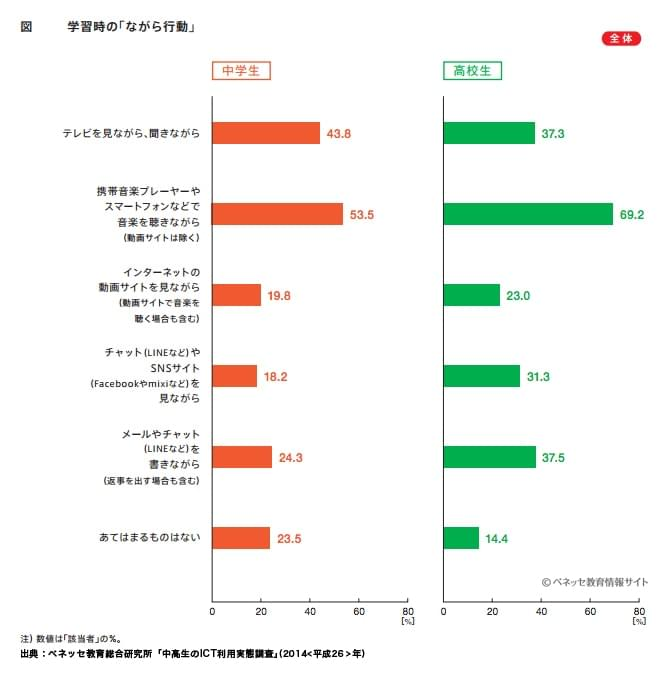

勉強中の音楽っていいの？
あなたは音楽を聞きながら勉強をしていますか？2014年のベネッセ教育総合研究所の「中高生のネット利用実態調査」によると中学生の5割、高校生の7割が音楽を聞きながら勉強をしています。※1
沢山の人が勉強中に音楽を聞いているようですが、勉強中の音楽は果たして勉強に良い影響を与えているのでしょうか。
音楽の与えるメリット
気分を上げて勉強のやる気を出す
好きな音楽を聞くことは気分を高揚させる効果があります。そのため音楽を聞いて気分を上げ、勉強に対するやる気を引き出し、勉強をはかどらせることが期待できます。また音楽を聞くことで眠気を覚ます効果が期待できる場合もあります。
リラックスできる
音楽には人をリラックスさせる効果もあります。リラックスすることで落ち着いて勉強でき、集中力が上がることが期待できます。また海外の医療現場では手術集に音楽を流し、リラックスして手術が出来るようにしているところが多数あります。
集中力や記憶力が高まる
前にもあったリラックスさせる効果に加え、アルファ波という音の発生で集中力などが高まることが科学的にもある可能性が高いとされています。アルファ波を含む音楽にはクラシックなどが挙げられます。そのためクラシックなどのアルファ波を含む音楽を聞くことで勉強の集中力や記憶力などが上がると思われます。
このサイトでは「α波（アルファ波）」と「クラシック」のジャンルを用意しているので、ここから音楽を聞くことができます。
雑音を遮る
音楽を聞くことで周囲の雑音をシャットダウンできます。そのため勉強に集中できやすい環境を作ることができます。
音楽の与えるデメリット
集中力を妨げる
メリットのほうで散々「集中力を高める」と言いましたが、音楽のジャンルによっては逆に集中力を妨げる場合があります。勉強と音楽の二重タスクになってしますので集中力が分散され、あまり集中ができなくなる場合があります。
また音楽の方だけに集中しすぎて、勉強の方に全く手が回らないという事態も発生してしまう可能性があります。
眠たくなる
あまりにもゆったりしすぎた音楽を聞くと眠くなってしまうばあいがあります。勉強中はただでさえ眠くなりやすいものですが、聞いている音楽が眠気を誘ってくると悪影響です。寝てしまっては集中力以前の問題で、元も子もありません。
勉強の妨げになる音楽
英語の長文を読んでいるときに英語の歌詞の音楽を聞くと、勉強ができなくなるでしょう。そのため勉強している種類や科目によって聞く音楽を考える必要があります。
受験本番などでは音楽は流れない
高校・大学受験や各種検定を取るときなど、基本的に受験会場では音楽は流れません。そのため音楽を聞きながらの勉強になれすぎて、本番で音楽がないことが理由で本来の力が発揮できないのは残念です。そのため音楽を聞きながらの勉強になれすぎるのも良くないでしょう。
勉強中に聞く音楽の選び方
音楽に気を取られないもの
音楽の方に集中しすぎたりするものは避けたほうが良いでしょう。
眠くならないもの
先程のように寝てしまっては意味がないので眠たくなりそうなゆったりした音楽などは避けましょう。
聞き流せるもの
音楽に歌詞が入っていたりすると集中できなきなります。そのため歌詞のない音楽や歌詞のあまり聞き取れない英語の歌詞の曲などが良いでしょう。
音楽を聞きながらの勉強は音楽や勉強の種類によって異なる
勉強中に音楽を聞くことは聞く音楽の種類やしている勉強の科目などによって良い場合と悪い場合があります。音楽を聞いて勉強をするときは眠くならない、歌詞の入っていない作業用BGMなどが良いでしょう。
このサイトでは勉強時に聞く作業用BGMをまとめています。是非このサイトを使って勉強に集中してください！
※1：データ、写真共にベネッセ教育情報サイト「【中高生のネット利用実態調査】中学生の５割、高校生の７割が、「携帯音楽プレーヤーやスマートフォンなどで音楽を聴きながら」勉強。」より引用